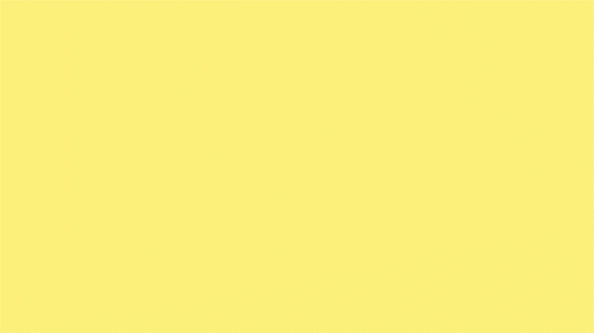
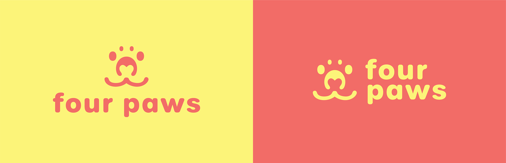
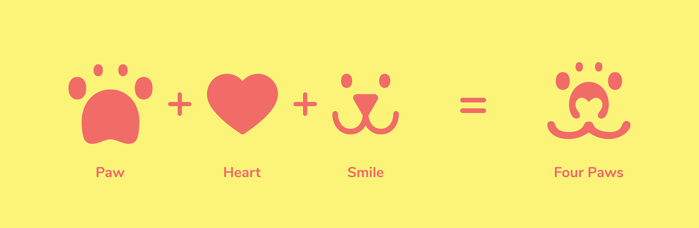
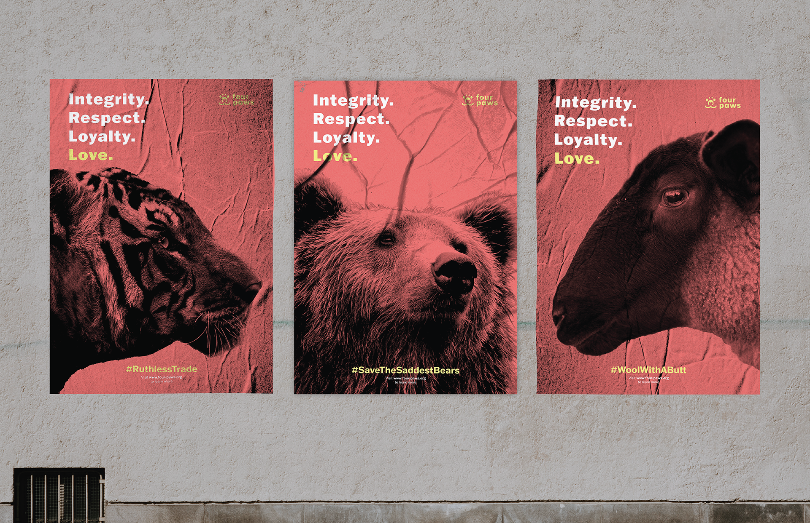
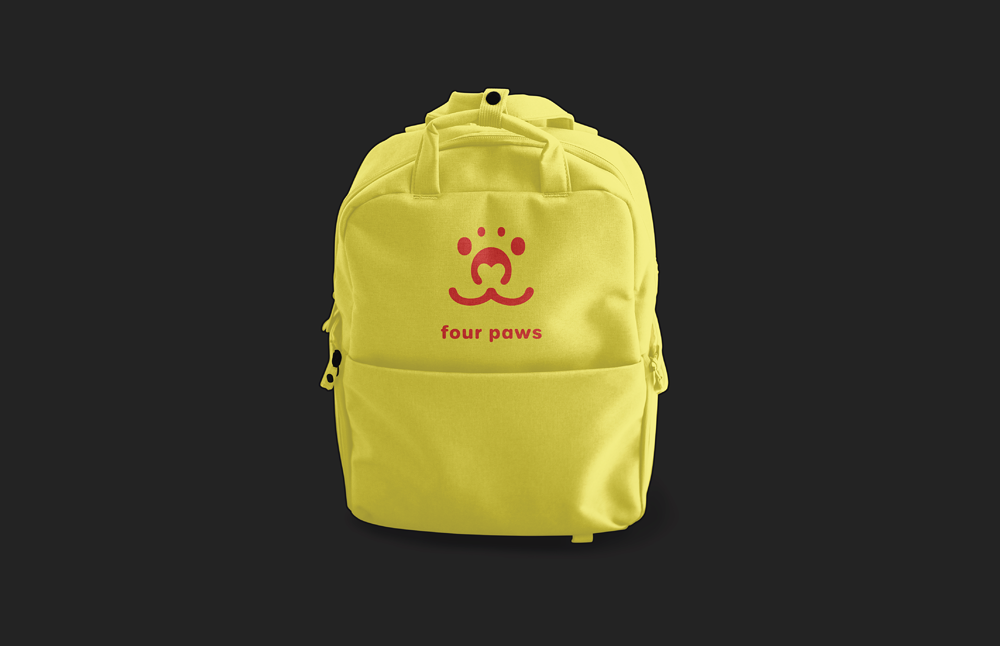
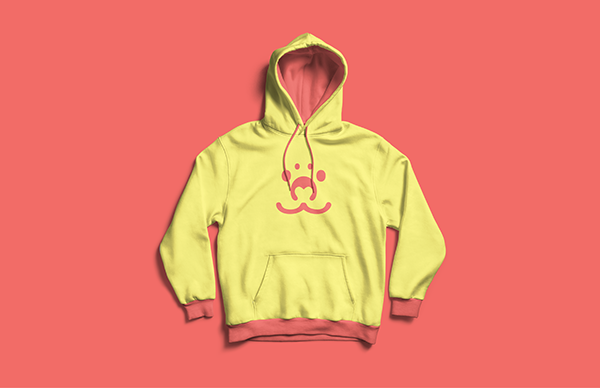

Four Paws
Four Paws, established on March 4th, 1988, is an international organization tackling cases of animal abuse all around the world. This rebranding is meant to highlight the main mission of Four Paws which is to love and care for any animal which may be a victim of abuse as well as highlight its origins as an Austrian-based company.


For this project, I combined three key elements to create the logo mark: the paw, the smile, and the heart. Each element in the mark symbolizes an important aspect of the Four Paws mission: the heart symbolizes the love and care for all animals, the smile represents the goal of Four Paws which is to keep all animals safe and happy, and the paw which symbolizes the strength of the animals themselves.

A poster series was created highlighting several different Four Paws campaigns to raise awareness about the different types of animal abuse the organization is working towards fixing. The posters have a more serious look compared to the overall branding of Four Paws as I wanted to highlight that even though the organization branding itself is playful and fun the actual issues which the organization tackles are very serious.

